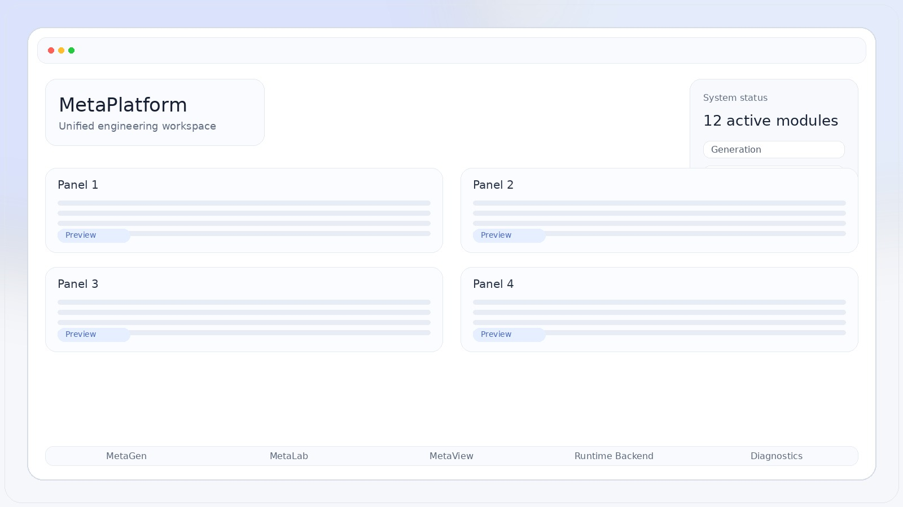
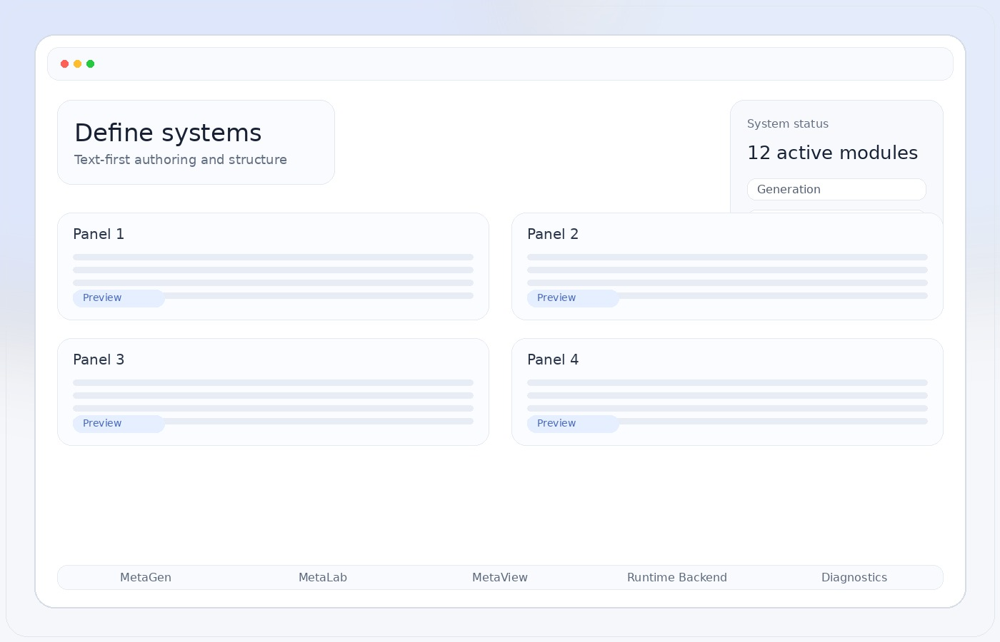

Define
Опиши систему, связи, параметры и документы в едином формате.
Единая среда для DSL, генерации артефактов, моделирования, диагностики и runtime-представления. Без визуального шума. С фокусом на архитектуру, скорость и контроль.


Опиши систему, связи, параметры и документы в едином формате.
Собери PLC/SCADA/runtime-артефакты из одной модели без ручного копирования.
Проверь поведение, сценарии и диагностические потоки до реального запуска.
Переходи к runtime и наблюдай систему как продукт, а не как набор разрозненных файлов.
Сайт должен продавать не “абстрактную инновацию”, а ощущение точной инженерной системы: строгая сетка, воздух, сильная типографика и крупные интерфейсные сцены.
Просто замени файлы в папке assets на свои скриншоты
или рендеры. Размеры и мягкое размытие по краям уже настроены.